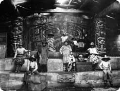

|

|
|

Interior of Chief Klart-Reech's house, Chilkat, Alaska, Courtesy Alaska State Library
Enlarge |
The Development of Ceremony and Art
Art objects play a central role in Northwest Coast spiritual practices and ceremonies.
Images of animals on works of art represented social groups known as clans. A clan was
composed of two or more family groups. Each clan had its own special animal and traced its
right to represent the animal to an ancestor who had once made a covenant with it. An
animal image not only identified the clan's heritage but also evoked spiritual protection in
return for respect and proper ceremony. Animals were not worshipped as deities, but rather
viewed as spiritual manifestations of nature whose protection could be sought. The most
important animals were ravens, bears, beavers, wolves, whales, and eagles, but nearly every
animal known to the Northwest Coast people appeared in their art.
Northwest Coast style is highly sophisticated, characterized by bold
line
and outlines. The complex designs often appear tightly contained within the shape of chests, spoons,
pipes, baskets, blankets, rattles, and masks. Animal forms are displayed on
two-dimensional
surfaces as if they have been split down the back and flattened to show all sides. This
produces an image that is
symmetrical
and carefully rearranged so that all the parts fit
the space. The beautifully executed images of Northwest Coast art are
abstract
and sophisticated, resulting in objects of great elegance.
Contact
Russian traders were the first to come into contact with Northwest Coast peoples in
the 1700s. By the end of the century, many settlers from the East had been attracted to the
area by the prospect of trade. Iron-edged tools, acquired through trade, contributed to the
wood carving skills of Native people, which reached a high point around the middle of the
1700s. Unfortunately, Europeans also introduced diseases that devastated the people. The
U.S. and Canadian governments exerted additional pressures in an attempt to
assimilate
the Northwest Coast people into white culture. The continuance of
tribal life was hindered when the
potlatch
was declared illegal by the Canadian government in 1884. The potlatch ban was
repealed in 1951, but many aspects of traditional life had disappeared by that time.
Tribal Web Sites
Haida (and Tlingit) web site: http://www.tlingit-haida.org/
Kwakiutl web site: http://www.umista.org/main/
Makah web site: http://www.makah.com/
|